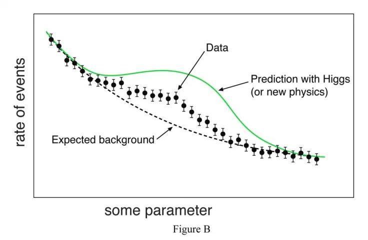

Figure 0.1: Outliers
Figure 0.1: Outliers
4 years ago (Yes, back to 2016), I was asked by a director of data science department from a very famous IT company about outliers. Basically, she asked two questions:
At that moment, I can only remember what my former boss told me: “plot a regression line, and draw an ellipse around the line. Then all the data dots outside that ellipse area are treated as outliers”. After hearing my answer, it was a deadly silence from the other end of the phone line. And that moment becomes one of the most embarrassing moment in my life.
Because of this cannot-forget-memory, I decide to spend some time to learn everything about outliers and I won’t experience that awkward moment again when someone ask me about what are outliers.
In a very general way, outliers are outliers with respect to “something.” The discussions I have read about outliers seem to avoid dealing with the fact that there are two steps in outlier detection:
Step 2 is easy. Step 1 is hard because it means one has to commit, not because it is technically difficult.
Can anyone define “outlier” in an absolute manner? beyond “a value that is highly unlikely given an assumed distribution.”
What is the mental model behind stating that an observation is an outlier??
Is there a single model for all situations? Probably not.
Because of these situations, Outliers can be very informative about the subject-area and data collection process. It’s essential to understand how outliers occur and whether they might happen again as a normal part of the process or study area.
Sometimes it’s best to keep outliers in the data. They can capture valuable information that is part of your study area. Retaining these points can be hard, particularly when it reduces statistical significance! However, excluding extreme values solely due to their extremeness can distort the results by removing information about the variability inherent in the study area. You’re forcing the subject area to appear less variable than it is in reality.
Unfortunately, resisting the temptation to remove outliers inappropriately can be difficult. Outliers increase the variability in your data, which decreases statistical power.
Consequently, excluding outliers can cause your results to become statistically significant.
When considering whether to remove an outlier, you’ll need to evaluate if it appropriately reflects your target population, subject-area, research question, and research methodology.
In broad strokes, there are three causes for outliers: - data entry (human errors) or measurement errors (instrument errors), - sampling problems and unusual conditions, and - natural variation (not an error, novelties in data)
Errors can occur during measurement and data entry. During data entry, typos can produce weird values. These types of errors are easy cases to understand. If you determine that an outlier value is an error, correct the value when possible. That can involve fixing the typo or possibly remeasuring the item or person. If that’s not possible, you must delete the data point because you know it’s an incorrect value.
Inferential statistics use samples to draw conclusions about a specific population. Studies should carefully define a population, and then draw a random sample from it specifically. That’s the process by which a study can learn about a population.
Unfortunately, your study might accidentally obtain an item or person that is not from the target population. There are several ways this can occur. For example, unusual events or characteristics can occur that deviate from the defined population. Perhaps the experimenter measures the item or subject under abnormal conditions. In other cases, you can accidentally collect an item that falls outside your target population, and, thus, it might have unusual characteristics.
If you can establish that an item or person does not represent your target population, you can remove that data point. However, you must be able to attribute a specific cause or reason for why that sample item does not fit your target population.
The previous causes of outliers are bad things. They represent different types of problems that you need to correct. However, natural variation can also produce outliers—and it’s not necessarily a problem.
All data distributions have a spread of values. Extreme values can occur, but they have lower probabilities.
If your sample size is large enough, you’re bound to obtain unusual values. In a normal distribution, approximately 1 in 340 observations will be at least three standard deviations (3 SDs) away from the mean. However, random chance might include extreme values in smaller datasets. In other words, the process or population you’re studying might produce weird values naturally. There’s nothing wrong with these data points. They’re unusual, but they are a normal part of the data distribution.
If the extreme value is a legitimate observation that is a natural part of the population you’re studying, you should leave it in the dataset.
So, in summary, if the outlier in question is:
A measurement error or data entry error, correct the error if possible. If you can’t fix it, remove that observation because you know it’s incorrect.
Not a part of the population you are studying (i.e., unusual properties or conditions), you can legitimately remove the outlier.
A natural part of the population you are studying, you should not remove it.
Outliers can be of two kinds: univariate and multivariate.
Univariate outliers can be found when looking at a distribution of values in a single feature space.
Multivariate outliers can be found in a n-dimensional space (of n-features). Looking at distributions in n-dimensional spaces can be very difficult for the human brain, that is why we need to train a model to do it for us.
Outliers can also come in different flavours, depending on the environment: point outliers, contextual outliers, or collective outliers.
Point outliers are single data points that lay far from the rest of the distribution.
Contextual outliers can be noise in data, such as punctuation symbols when realizing text analysis or background noise signal when doing speech recognition.
Collective outliers can be subsets of novelties in data such as a signal that may indicate the discovery of new phenomena (As in figure B).

Outlier detection methods have been suggested for numerous applications, such as credit card fraud detection, clinical trials, voting irregularity analysis,data cleansing, network intrusion, severe weather prediction, geographic information systems, athlete performance analysis, and other data-mining tasks.
As you saw, there are many ways to identify outliers. The philosophy is that you must use your in-depth knowledge about all the variables when analyzing data. Part of this knowledge is knowing what values are typical, unusual, and impossible.
When you have this in-depth knowledge, it’s best to use the more straightforward, visual methods.
At a glance, data points that are potential outliers will pop out under your knowledgeable gaze. Consequently, I’ll often use boxplots, histograms, and old-fashioned data sorting These simple tools provide enough information to find unusual data points for further investigation.
Typically, I don’t highly recommend Z-scores and hypothesis tests to find outliers because of their various complications. But I will introduce a couple of hypothesis tests to detect outliers in the later posts.
As you already know, using outlier tests can be challenging because they usually assume your data:
Additionally, the existence of outliers makes Z-scores less extreme. It’s ironic, but these methods for identifying outliers are actually sensitive to the presence of outliers! Fortunately, as long as researchers use a simple method to display unusual values, a knowledgeable analyst is likely to know which values need further investigation.
In my view, the more formal statistical tests and calculations are overkill because they can’t definitively identify outliers. Ultimately, analysts must investigate unusual values and use their expertise to determine whether they are legitimate data points. Statistical procedures don’t know the subject matter or the data collection process and can’t make the final determination. You should not include or exclude an observation based entirely on the results of a hypothesis test or statistical measure.
At this stage of the analysis, we’re only identifying potential outliers for further investigation. It’s just the first step in handling them. If we make errors, we want the errors on the side of investigating too many values rather than too few.
Not all outliers are bad and some should not be deleted. In fact, outliers can be very informative about the subject-area and data collection process. It’s important to understand how outliers occur and whether they might happen again as a normal part of the process or study area. If you could keep them (so-called outliers here) in your data, it’s the best.
When you decide to remove outliers, document the excluded data points and explain your reasoning. You must be able to attribute a specific cause for removing outliers.
– To be Continued